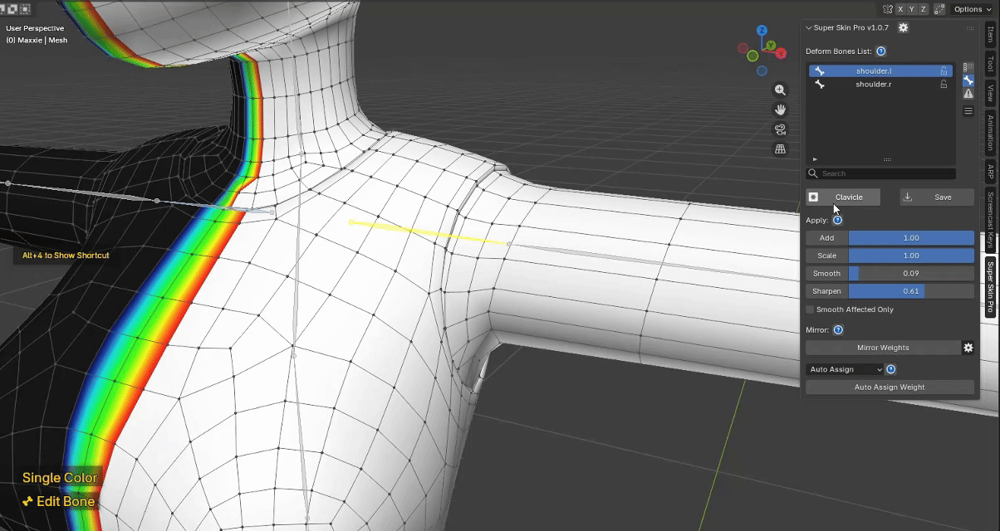
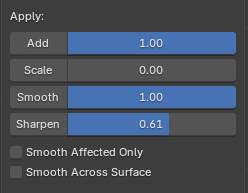
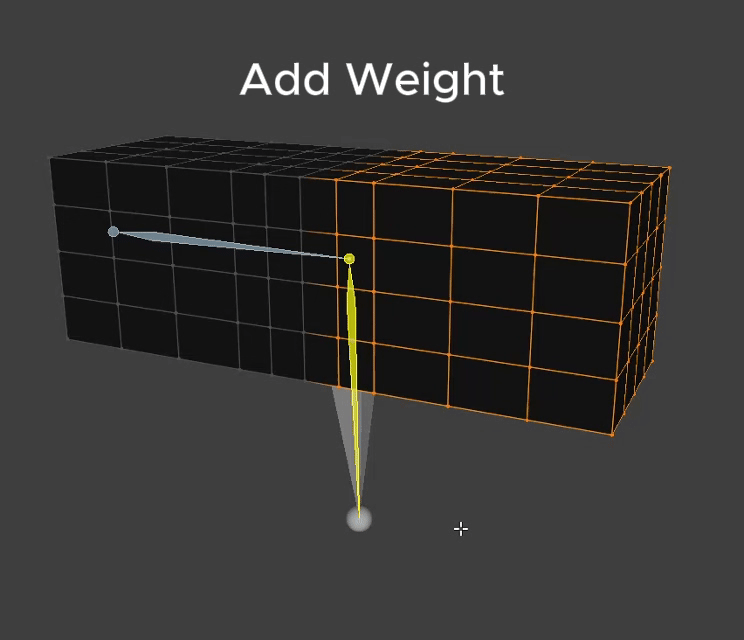
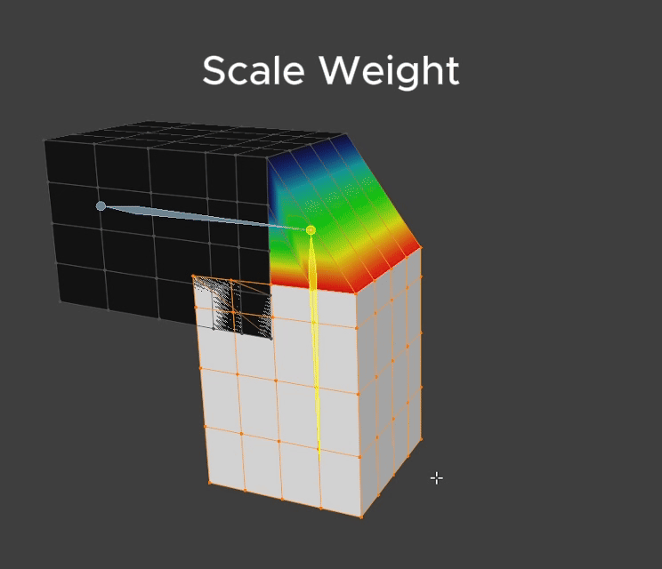
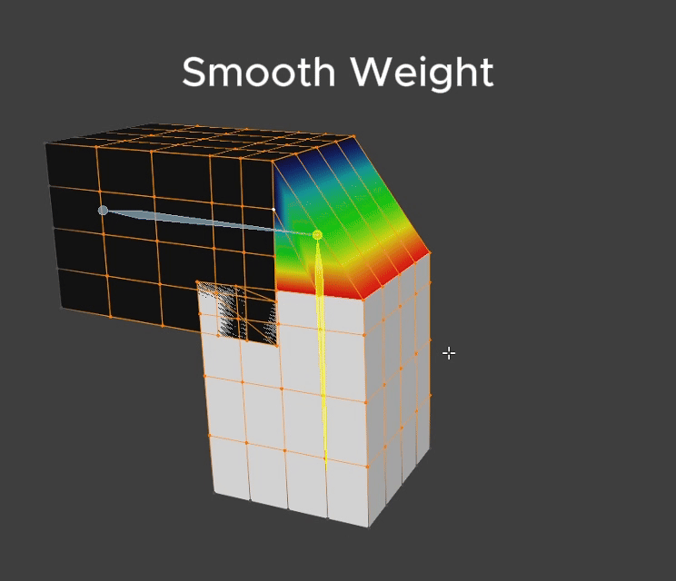
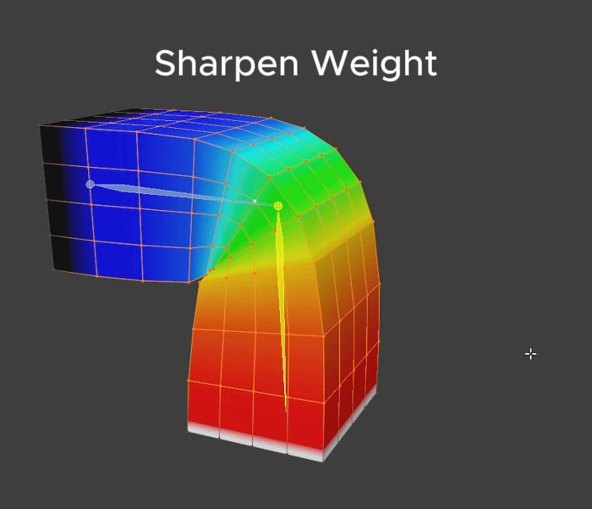

Weight Apply Operation¶
Toggle Layer Mask Edit Mode¶

Every weight edit has its own Mask.
You can toggle it on/off and edit it via the button, or with the Alt + 1 shortcut.
Notice the status label at the bottom-left changes from "Edit Bone" to "Edit Layer Mask" once you enter Mask editing mode.
Note: every Apply Weight tool works exactly as normal for editing a Layer's Mask too!
Apply Weight

The Apply Weight UI has a slider plus buttons for each Apply Weight tool: Add Weight, Scale Weight, Smooth Weight, Sharpen Weight. You can apply weight through the UI or with a shortcut — details below.
1. Add Weight¶

Effect - Add Weight adds weight according to the Intensity value. - The value ranges 0-1, and works additively: Weight Value + Add Value
How to use
- Select only the vertices you want to edit.
- If nothing is selected, Add Weight applies to the whole mesh.
- Via shortcut: hold
Alt + Left Clickand drag right to adjust the Add Weight value. - Via UI: adjust the slider, then press the Add Weight button.
Notes
- You can Lock a Bone to keep it from being affected by Apply Weight.
- After applying weight, whether via UI or shortcut, a popup appears at the bottom-left letting you further adjust the value after the fact.
2. Scale Weight¶

Effect
- Scale Weight reduces the Intensity of the weight.
- The value ranges 0-1 and works multiplicatively: Weight Value * Scale Value
- At 1: no effect happens, since multiplying by 1 always gives back the same value.
- At 0.5: intensity is reduced by half.
- At 0: intensity is reduced all the way to 0.
How to use
- Select only the vertices you want to edit.
- If nothing is selected, Scale Weight applies to the whole mesh.
- Via shortcut: hold
Alt + Left Clickand drag left to adjust the Scale Weight value. - Via UI: adjust the slider, then press the Scale Weight button.
Notes
- You can Lock a Bone to keep it from being affected by Apply Weight.
- After applying weight, whether via UI or shortcut, a popup appears at the bottom-left letting you further adjust the value after the fact.
3. Smooth Weight¶

Effect
- Smooths weight so it blends closer to its surrounding neighbors.
- The value ranges 0-10.
How to use
- Select only the vertices you want to edit.
- If nothing is selected, Smooth Weight applies to the whole mesh.
- Via shortcut: hold
Alt + Right Clickand drag right to adjust the Smooth Weight value. - Via UI: adjust the slider, then press the Smooth Weight button.
Notes
- When Smooth Affected Only is checked, smoothing is limited to only the area that has previously been smoothed.
- You can Lock a Bone to keep it from being affected by Apply Weight.
- After applying weight, whether via UI or shortcut, a popup appears at the bottom-left letting you further adjust the value after the fact.
4. Sharpen Weight¶

Effect
- Makes weight values diverge more sharply and strongly from their surroundings.
- The value ranges 0-10.
How to use
- Select only the vertices you want to edit.
- If nothing is selected, Sharpen Weight applies to the whole mesh.
- Via shortcut: hold
Alt + Right Clickand drag left to adjust the Sharpen Weight value. - Via UI: adjust the slider, then press the Sharpen Weight button.
Notes
- You can Lock a Bone to keep it from being affected by Apply Weight.
- After applying weight, whether via UI or shortcut, a popup appears at the bottom-left letting you further adjust the value after the fact.